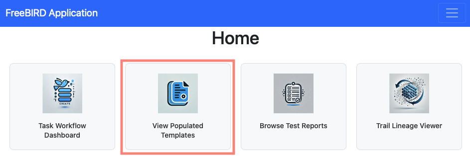
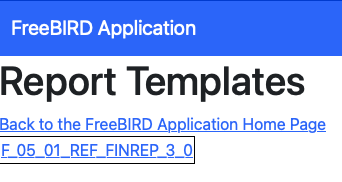
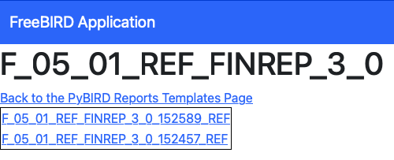
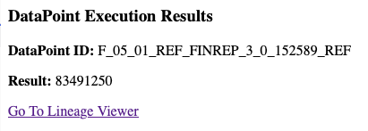

Execute Datapoint Guide
Feature Overview
The Execute Datapoint feature is a powerful calculation engine within Eclipse Free BIRD Tools that enables you to run complex calculations and transformations on populated template cells. This feature processes individual datapoints or entire batches, applying regulatory formulas and validation rules to generate compliant reporting data.
Purpose
Execute Datapoint addresses the critical need for accurate regulatory calculations in financial reporting. This feature provides automated calculations that execute complex regulatory formulas with precision, real-time validation to ensure results meet regulatory requirements immediately, and a complete audit trail that maintains records of all calculations for compliance purposes.
Financial institutions rely on this feature to transform raw data into calculated regulatory metrics, ensuring accuracy in reporting while maintaining full transparency and auditability of the calculation process.
Getting Started
Prerequisites
Before using Execute Datapoint, ensure that templates are populated with source data and that database connectivity is established. You'll also need to have the Regulatory Framework data loaded, such as the Financial Reporting Output layer.
Accessing Execute Datapoint
To access the Execute Datapoint functionality, navigate to the FreeBIRD application homepage and click on "View Populated Templates".

After clicking, you'll see a list of all populated templates available in the system. Each template represents a collection of data cells ready for execution.

Step-by-Step Guide
Working with Populated Templates
The populated templates list displays the template name which identifies the specific regulatory template. Click on any template to view its individual cells. Each cell contains specific datapoints that can be executed.

Each cell shows a unique cell reference, the specific datapoint to be calculated, and the current or calculated value.
Individual Cell Execution
To execute a specific datapoint, select the desired cell from the template cell list and review the cell details. Click the "Execute" button to run the calculation and monitor the execution progress.

Best Practices
Before execution, ensure your input data is complete by reviewing source data completeness. Verify you've selected the correct regulatory template by checking the template version and requirements. Understand the calculation logic by reviewing the formula documentation.
After execution, verify results by cross-checking calculated values against expected outcomes. Review execution logs for any warnings or issues that may have occurred during processing.
Conclusion
The Execute Datapoint feature transforms raw financial data into calculated regulatory metrics through a controlled, transparent process. By providing individual execution capabilities, it offers the precision and control needed for various reporting scenarios while maintaining the accuracy and compliance required for regulatory submissions.
Next Steps
Review the Workflow Dashboard Guide to understand the complete workflow context in which Execute Datapoint operates. Explore DPM Operations for guidance on data preparation and template population. Learn about Pull Request Creation to understand how to submit your calculated results for review and approval.
For technical support or regulatory guidance, connect with the community via Eclipse Chat or email efbt-dev@eclipse.org.